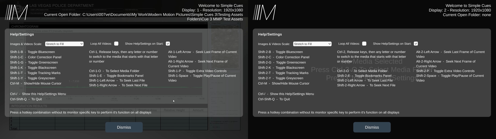
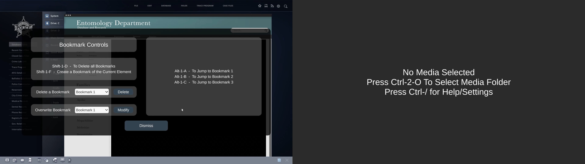

Simple Cues is an application used for cueing up videos and images for on set playback at the press of a button. The user can give the application a folder of different images and videos, as well as flags in the file names to set certain parameters. They can then jump to specific files with a variety of different hotkeys. The purpose of this application is complete customization. If you need a video to loop within a set in and out point, bookmarks at specific time stamps, color correction, auto jumping to the next cue, different elements on different monitors at the same time? This application does that and more.
The previous versions of this application were built natively in macOS swift. I was assigned to build the 3rd version of the application from the ground up in Unity due to my experience with the engine. The reason for re-building it was for the cross platform compatibility that Unity would provide us as well as the ability to implement newer features more easily. Now we could build for Windows, Linux, and Mobile. I was given a list of features the app needed and worked on it when we did not have immediate graphics to work on. I completed the 3.0 build in 4 months.
I would get feedback and ask questions on how exactly certain features would need to work, but otherwise I had full autonomy when working on it. Feedback from our technicians was very positive and whenever they encountered a bug I swiftly fixed it.
 • Load in images and videos from a folder
• Cycle through open images and videos
• Select an element with it's starting letter
• Have “L” before “-” in the file name set the video to loop by default
• Have “H” before “-” in the file name set the video to hold by default
• Have “N” before “-” in the file name set the video to go to next by default
• Ability to play and pause a video
• Ability to frame step
• Loop all videos checkbox
• Persistent settings, settings save and load automatically
• Blue/green/gray/black screen with tracking marks
• Ability to hide or show mouse cursor
• Ability to screen specifically toggle a setting
• Ability to toggle a setting on both screens simultaneously
• Video scrubber bar
• In app toggles for setting individual video looping, going to next, and holding on start
• Ability to set an in and out point on a video
• Help screen that updates based upon the monitor count
• Ability to define up to 10 bookmarks
• Ability to delete and overwrite individual bookmarks
• Color correction settings
• Toggle for if images and videos should scale to fit or stretch